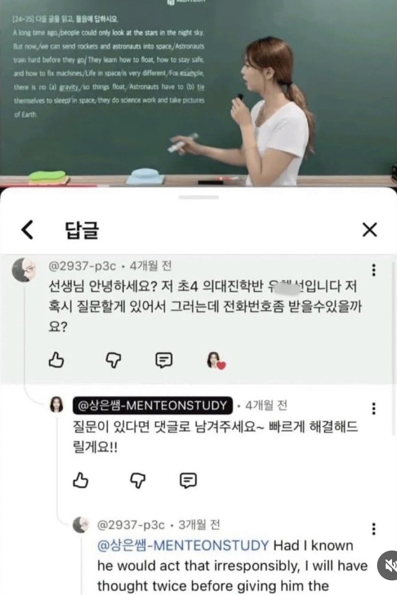
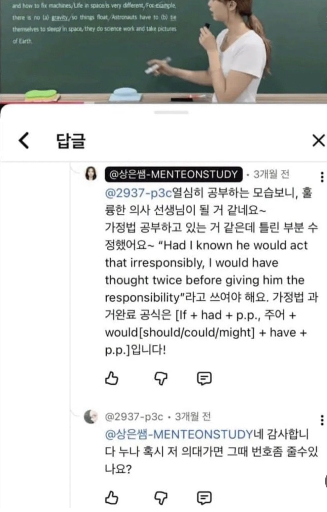
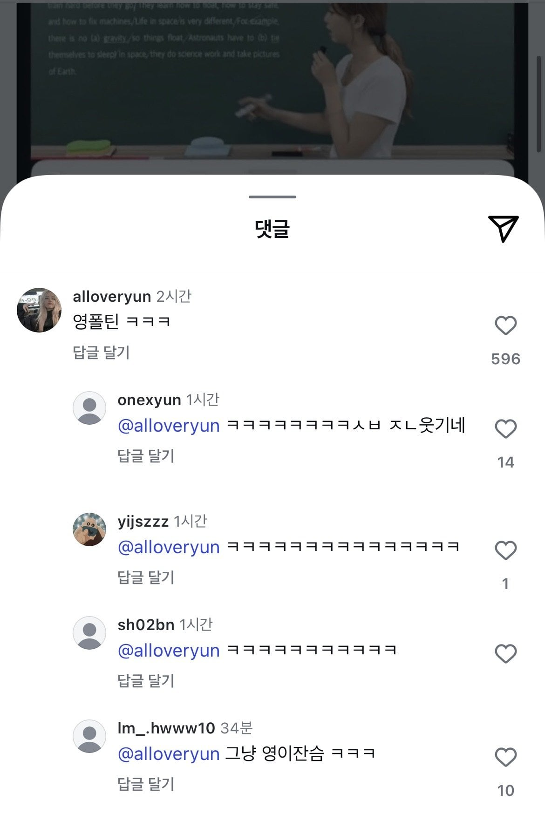

25 · 8 · 2 분 전 · 원문



수집 당시 댓글 8개
코코아비스킷 · 35 분 전
쿼터포티
↳ 답글 · 미츠루기 · 5 분 전
ㅋㅋㅋㅋㅋㅋㅋㅋㅋㅋㅋㅋㅋ
락스계 · 24 분 전
자연스럽게 누나 나왔네
플라네튠 · 4 분 전
ㅋㅋㅋㅋㅋㅋㅋㅋ 대단한 녀석
궁극의역병 · 3 분 전
귀엽네ㅋㅋㅋㅋ
감사의정권지르기 · 3 분 전
그냥 영이잖아ㅋㅋㅋ
아침밥 · 1 분 전
그래도 용기 있잖아 한잔해~
애스트라이저 · 방금 전
선생님은 화장실이 아니예요
쿼터포티